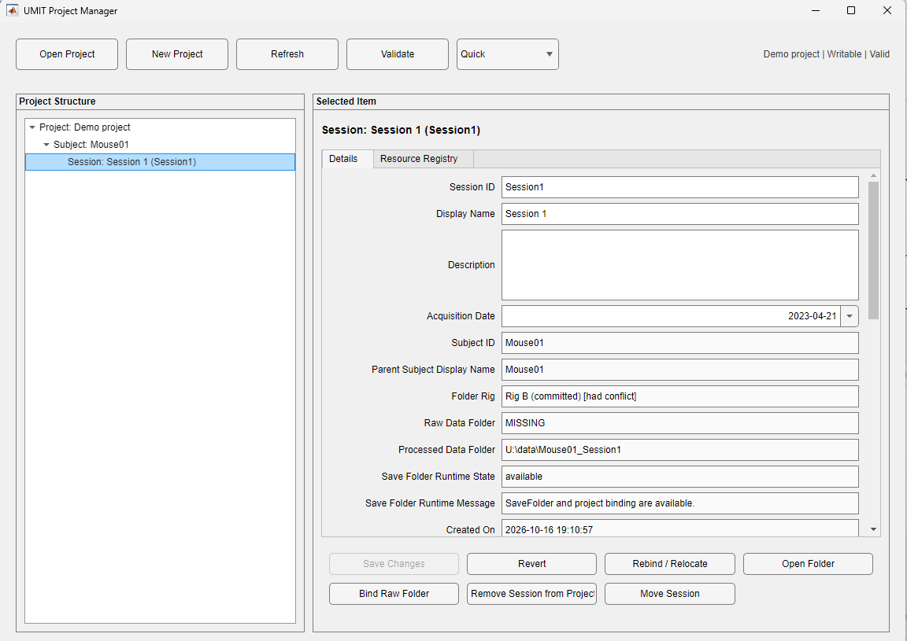
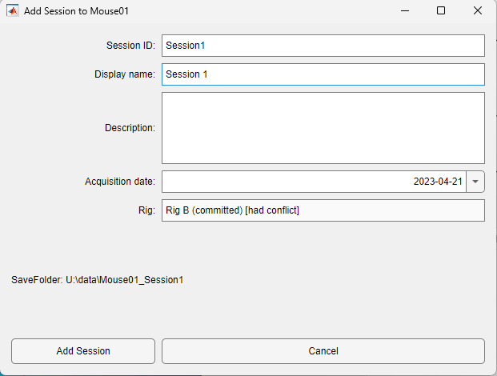
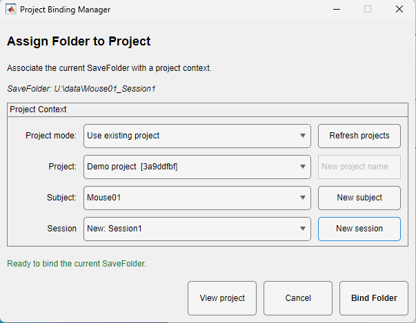

The Project submenu of a folder that is not bound yet.
Project Manager organizes project information and subject reference libraries. Project Binding Manager associates one Save Folder with a new session of a project subject. They are documented together because both create and maintain the link between a Save Folder and its project. Projects are optional: see Project and session integration.
Use Management > Project > Bind Current Session... to open Project Binding Manager for the loaded Save Folder. Use Management > Project > Project Manager... for full project administration. Binding problems of the loaded folder are repaired from Management > Project > Repair Folder Binding... (see below).
The Project submenu of a folder that is not bound yet.

| Control/action | Purpose |
|---|---|
| Open Project / New Project / Refresh | Selects, creates, or reloads centralized project information. |
| Validate (Quick / Full) | Checks the project structure and reports whether changes are allowed. A problem in one session does not block the rest of the project; only problems at project level make it read-only. |
| Project tree | Selects the project, a subject or a session. |
| Details and registry tabs | Edits allowed descriptive metadata. The subject and session resource registries are shown as read-only tables. |
| Folder Rig (session details) | The rig of the session's Save Folder, read from its rig ledger. It is not stored in the project and is changed only in DataViewer (Folder rig). A session without a rig is valid. |
| Save Changes / Revert | Commits validated edits transactionally or restores the selected record. |
| Add Subject / Add Session | Creates hierarchy records. Adding a session selects its processed Save Folder; the dialog shows the folder's rig for information. |
| Rebind / Relocate | Points the session to another Save Folder, for example after the data were moved. |
| Move Session | Moves a session to another subject. |
| Repair Binding | Repairs an inconsistent link between a session and its Save Folder after review (shown when needed). |
| Bind Raw Folder / Change Raw Folder | Records the session's Raw Folder. When the Save Folder's DataParams.mat records a Raw Folder (written at import), that folder is the authority and a different one is refused. |
| Open Folder | Opens the session's Save Folder in the file browser. |
| Add Image Reference | Imports an image reference into the subject's library. See Image Reference Manager. |
| Remove Session from Project / Remove Subject / Delete Project | Destructive administrative actions with explicit confirmation and dependency checks. Removing a session unbinds its folder; the folder's project ledger keeps the history. |
Image alignment transforms are not stored in the project: each Save Folder keeps its own alignment in DataParams.mat.
Project Binding Manager binds the current Save Folder to a new session. Existing sessions are not offered, because binding one would take it away from its own Save Folder; to point an existing session to another folder, use Rebind / Relocate in the Project Manager.


When the folder is already bound, the manager opens in rebind mode (Rebind Folder), again to a new session; Use Binding keeps the current binding. After a binding change, DataViewer checks whether the folder's alignment reference is already in the subject's library and, if not, offers to add it (see Adding a folder's reference to the library).
The binding of a Save Folder is read from its project ledger and compared with the projects on this computer. Reading never changes the folder. DataViewer reports a problem in the status line when the data are loaded; Management > Project > Repair Folder Binding... then offers the fitting repair:
| State | Meaning | Repair |
|---|---|---|
| Unbound | The folder has no project ledger, or its binding was removed (the history stays). | Nothing to repair; bind it if you want a project. |
| Project unavailable (orphan) | The project the folder is bound to is not on this computer, for example a disconnected drive or another computer. | The Project Unavailable dialog offers Retry (after reconnecting the drive), Reassign Folder (bind the folder to a new session of an available project) and Remove Binding. |
| Stale link | The project is here, but no session binds this folder any more (the session was removed, moved or rebound while the folder was offline). | The Stale Project Link dialog offers Remove Link and Bind... and Remove Link. Removing the link is recorded in the folder's project ledger. |
| Conflict, invalid | The project is registered twice on this computer, or the project ledger is damaged or was edited by hand. | An alert explains the problem. Resolve duplicated projects in the projects root; restore a damaged ledger from a backup. |
| Path mismatch | The session binds this folder, but its registered location differs (a moved or copied folder). | Use Rebind / Relocate or Repair Binding in the Project Manager. |
Folders bound with an earlier development version kept a UMITProjectBinding.umitlink file. That file is no longer read: such a folder reads as unbound; bind it again.
Project and ledger changes take a short lock. If a change was interrupted (for example MATLAB closed), the lock can stay behind and the next change reports that the project or folder is locked. DataViewer, Project Binding Manager, the Project Manager and the Folder Rig dialogs then offer Clear Stale Lock. Only an old lock is cleared: at least 60 minutes for a project, 10 minutes for a folder ledger. A recent lock is kept, because another operation may still be running; wait and try again.
When either manager closes, DataViewer reads the folder's project ledger again and updates the context line and the available commands.
Rig binding is a separate, independent concept from project binding — see Folder rig and Rigs and Optical Library.
Use the managers when a project or folder moves
Do not create duplicate project records or hand-edit UMITProjectLedger.json. Use Rebind / Relocate or Repair Binding so the existing subject and session identity is preserved.